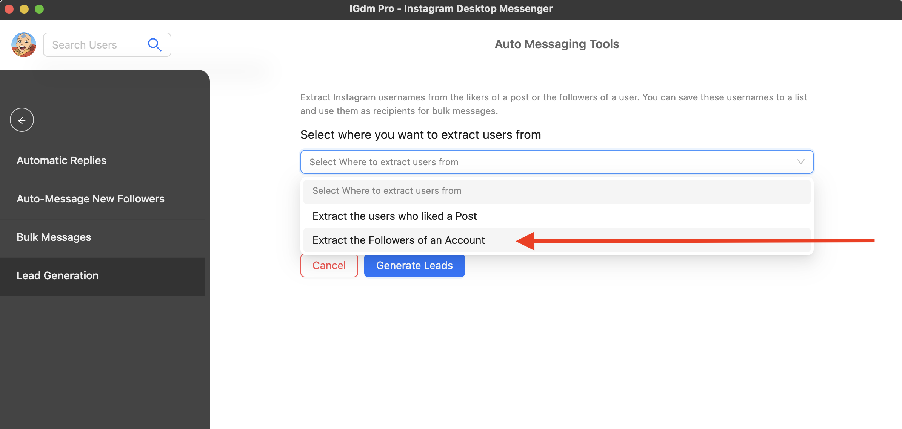
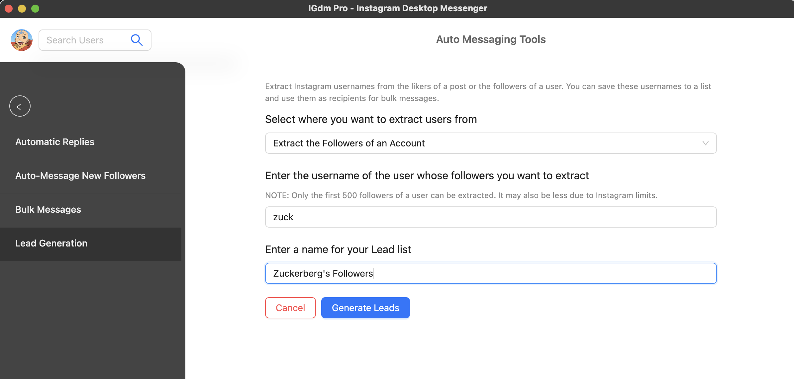

How To Export (or Scrape) The Followers of any Instagram Account
There are various ways to generate leads on Instagram. Some examples are; Paid Instagram Ads,
Using Link Trees, Automated messaging, Or extracting usernames from
the list of people who follow an Account similar to yours.
In this article, we will walk you through a guide on how you can generate leads by exporting the users who
follow a specific Instagram account. This will be done using the IGdm Pro app.
Installing IGdm Pro
IGdm Pro is a handy application that has been designed to improve the effeciency of Instagram users who run businesses
with their accounts. The IGdm Pro app offers bulk message sending, auto-replies, automatic welcome message to new followers,
and a host of other productivity boosting features.
To install the IGdm Pro app, simply visit the website (https://pro.igdm.me), and click
the download link that is applicable to your operating system. Once downloaded to your computer,
launch the application and complete the installation process.
Log In to Your Instagram Account
- Launch the IGdm Pro App
- Click on the button that says "Click to login with Browser". This will open instagram.com on the Chromium Browser

- Log into your desired Instagram Account via the Instagram page opened on the Chromium Browser.
- Once login is complete, the browser will be automatically closed and you can switch back to the IGdm Pro app as it loads up your account.
Start Collecting Instagram Users
- Move your mouse to hover on your profile picture located on the top left corner of the application (see screenshot below)
- A dropdown menu will appear with a list of actions that you can perform. Click on the "Auto-Messaging Tools" option.

- This will switch the App to the "Auto Message Tools" view.
- From the options on the Sidebar, click "Lead Generation" (see screenshot below).
- A form will appear with a dropdown to select how you want to generate leads. It has the following options:
- "Extract the users who liked a Post"
- "Extract the Followers of an Account"
For the purpose of this guide we are going to select the second option, which is "Extract the Followers of an Account" (See screenshot below)

- After the selection is made, a username input will appear. You are meant to provide the username of the account whose followers you want to scrape. For the purpose of this guide, we are going to input "zuck" as in the screenshot below.
- Then finally, you can name the list to easily identify it in the future. We are going to name ours "Zuckerberg's Followers".
- Now you can click on the "Generate Leads" button and watch it extract the followers of the target account. Once the usernames are extracted, you will have the option to send them a mass Instagram message, or to auto-follow them.
NOTE: To avoid overwhelming Instagram's servers, IGdm Pro will only scrape the first 500 followers of the target account.
Also in some cases, Instagram may allow IGdm to only access the first 50 followers, in which case, only the first 50 followers will be scraped.

Conclusion
We hope you found this article useful, and are able to step your Lead Generation game up with IGdm Pro.